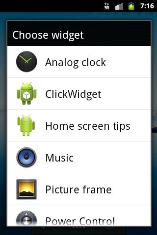
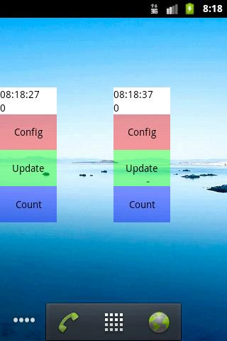
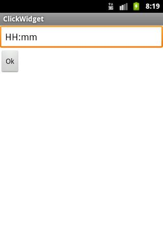
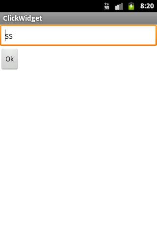
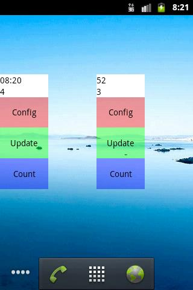

В этом уроке:
- обрабатываем нажатия на виджет
Продолжаем тему виджетов. Виджет, который показывает информацию – это хорошо, это мы теперь умеем. Но кроме этого виджет еще умеет реагировать на нажатия.
Т.к. прямого доступа к view-компонентам виджета мы не имеем, то использовать, как обычно, обработчики нажатий не получится. Но RemoteViews, используемый нами для работы с view, позволяет настроить реакцию view на нажатие. Для этого он использует PendingIntent. Т.е. мы можем на нажатие на виджет повесить вызов Activity, Service или BroadcastReceiver. В этом уроке сделаем непростой, но достаточно содержательный пример, отражающий различные техники реагирования на нажатия.
Создадим виджет, состоящий из двух текстов и трех зон для нажатий.
Первый текст будет отображать время последнего обновления, а второй – кол-во нажатий на третью зону нажатия.
Первая зона будет по клику открывать конфигурационное Activity. Это пригодится в том случае, когда вы хотите дать пользователю возможность донастроить виджет после установки. Конфигурировать будем формат отображаемого в первой строке времени.
Вторая зона нажатия будет просто обновлять виджет, тем самым будет меняться время в первом тексте.
Каждое нажатие на третью зону будет увеличивать на единицу счетчик нажатий и обновлять виджет. Тем самым будет меняться второй текст, отображающий текущее значение счетчика.
Для простоты, конечно, можно было разбить этот пример на три отдельных виджета. Но я решил сделать все в одном, чтобы наглядно показать, что один виджет может совершать разные действия в ответ на нажатия на разные view.
Создадим проект без Activity:
Project name: P1201_ClickWidget
Build Target: Android 4.0
Application name: ClickWidget
Package name: ru.startandroid.develop.p1201clickwidget
strings.xml:
<string name="config">Config</string>
<string name="update">Update</string>
<string name="count">Count</string>
<string name="ok">Ok</string>Layout-файл виджета widget.xml:
<?xml version="1.0" encoding="utf-8"?>
<LinearLayout
xmlns:android="http://schemas.android.com/apk/res/android"
android:layout_width="match_parent"
android:layout_height="match_parent"
android:orientation="vertical">
<TextView
android:id="@+id/tvTime"
android:layout_width="match_parent"
android:layout_height="wrap_content"
android:background="#fff"
android:textColor="#000">
</TextView>
<TextView
android:id="@+id/tvCount"
android:layout_width="match_parent"
android:layout_height="wrap_content"
android:background="#fff"
android:textColor="#000">
</TextView>
<TextView
android:id="@+id/tvPressConfig"
android:layout_width="match_parent"
android:layout_height="0dp"
android:layout_weight="1"
android:background="#66ff0000"
android:gravity="center"
android:text="@string/config"
android:textColor="#000">
</TextView>
<TextView
android:id="@+id/tvPressUpdate"
android:layout_width="match_parent"
android:layout_height="0dp"
android:layout_weight="1"
android:background="#6600ff00"
android:gravity="center"
android:text="@string/update"
android:textColor="#000">
</TextView>
<TextView
android:id="@+id/tvPressCount"
android:layout_width="match_parent"
android:layout_height="0dp"
android:layout_weight="1"
android:background="#660000ff"
android:gravity="center"
android:text="@string/count"
android:textColor="#000">
</TextView>
</LinearLayout>Первые два TextView – это тексты, а последние три – зоны нажатия.
Layout-файл для конфигурационного экрана config.xml:
<?xml version="1.0" encoding="utf-8"?>
<LinearLayout
xmlns:android="http://schemas.android.com/apk/res/android"
android:layout_width="match_parent"
android:layout_height="match_parent"
android:orientation="vertical">
<EditText
android:id="@+id/etFormat"
android:layout_width="match_parent"
android:layout_height="wrap_content"
android:ems="10">
</EditText>
<Button
android:layout_width="wrap_content"
android:layout_height="wrap_content"
android:onClick="onClick"
android:text="@string/ok">
</Button>
</LinearLayout>Поле для ввода формата даты и кнопка подтверждения
Класс конфигурационного экрана ConfigActivity.java:
package ru.startandroid.develop.p1201clickwidget;
import android.app.Activity;
import android.appwidget.AppWidgetManager;
import android.content.Intent;
import android.content.SharedPreferences;
import android.os.Bundle;
import android.view.View;
import android.widget.EditText;
public class ConfigActivity extends Activity {
public final static String WIDGET_PREF = "widget_pref";
public final static String WIDGET_TIME_FORMAT = "widget_time_format_";
public final static String WIDGET_COUNT = "widget_count_";
int widgetID = AppWidgetManager.INVALID_APPWIDGET_ID;
Intent resultValue;
SharedPreferences sp;
EditText etFormat;
protected void onCreate(Bundle savedInstanceState) {
super.onCreate(savedInstanceState);
// извлекаем ID конфигурируемого виджета
Intent intent = getIntent();
Bundle extras = intent.getExtras();
if (extras != null) {
widgetID = extras.getInt(AppWidgetManager.EXTRA_APPWIDGET_ID,
AppWidgetManager.INVALID_APPWIDGET_ID);
}
// и проверяем его корректность
if (widgetID == AppWidgetManager.INVALID_APPWIDGET_ID) {
finish();
}
// формируем intent ответа
resultValue = new Intent();
resultValue.putExtra(AppWidgetManager.EXTRA_APPWIDGET_ID, widgetID);
// отрицательный ответ
setResult(RESULT_CANCELED, resultValue);
setContentView(R.layout.config);
sp = getSharedPreferences(WIDGET_PREF, MODE_PRIVATE);
etFormat = (EditText) findViewById(R.id.etFormat);
etFormat.setText(sp.getString(WIDGET_TIME_FORMAT + widgetID, "HH:mm:ss"));
int cnt = sp.getInt(ConfigActivity.WIDGET_COUNT + widgetID, -1);
if (cnt == -1) sp.edit().putInt(WIDGET_COUNT + widgetID, 0);
}
public void onClick(View v){
sp.edit().putString(WIDGET_TIME_FORMAT + widgetID, etFormat.getText().toString()).commit();
//MyWidget.updateWidget(this, AppWidgetManager.getInstance(this), widgetID);
setResult(RESULT_OK, resultValue);
finish();
}
}Тут ничего нового для нас нет.
В onCreate мы извлекаем и проверяем ID экземпляра виджета, для которого открылся конфигурационный экран. Далее формируем отрицательный ответ на случай нажатия кнопки Назад. Читаем формат времени и помещаем его в EditText. Читаем значение счетчика и, если это значения еще нет в Preferences, то пишем туда 0.
В onClick мы сохраняем в Preferences формат из EditText, обновляем виджет, формируем положительный ответ и выходим.
Код обновления виджета пока закоментен, т.к. у нас еще нет класса MyWidget. Сейчас создадим и можно будет раскоментить.
Класс виджета MyWidget.java:
package ru.startandroid.develop.p1201clickwidget;
import java.sql.Date;
import java.text.SimpleDateFormat;
import android.app.PendingIntent;
import android.appwidget.AppWidgetManager;
import android.appwidget.AppWidgetProvider;
import android.content.Context;
import android.content.Intent;
import android.content.SharedPreferences;
import android.content.SharedPreferences.Editor;
import android.os.Bundle;
import android.widget.RemoteViews;
public class MyWidget extends AppWidgetProvider {
final static String ACTION_CHANGE = "ru.startandroid.develop.p1201clickwidget.change_count";
public void onUpdate(Context context, AppWidgetManager appWidgetManager,
int[] appWidgetIds) {
super.onUpdate(context, appWidgetManager, appWidgetIds);
// обновляем все экземпляры
for (int i : appWidgetIds) {
updateWidget(context, appWidgetManager, i);
}
}
public void onDeleted(Context context, int[] appWidgetIds) {
super.onDeleted(context, appWidgetIds);
// Удаляем Preferences
Editor editor = context.getSharedPreferences(
ConfigActivity.WIDGET_PREF, Context.MODE_PRIVATE).edit();
for (int widgetID : appWidgetIds) {
editor.remove(ConfigActivity.WIDGET_TIME_FORMAT + widgetID);
editor.remove(ConfigActivity.WIDGET_COUNT + widgetID);
}
editor.commit();
}
static void updateWidget(Context ctx, AppWidgetManager appWidgetManager,
int widgetID) {
SharedPreferences sp = ctx.getSharedPreferences(
ConfigActivity.WIDGET_PREF, Context.MODE_PRIVATE);
// Читаем формат времени и определяем текущее время
String timeFormat = sp.getString(ConfigActivity.WIDGET_TIME_FORMAT
+ widgetID, null);
if (timeFormat == null) return;
SimpleDateFormat sdf = new SimpleDateFormat(timeFormat);
String currentTime = sdf.format(new Date(System.currentTimeMillis()));
// Читаем счетчик
String count = String.valueOf(sp.getInt(ConfigActivity.WIDGET_COUNT
+ widgetID, 0));
// Помещаем данные в текстовые поля
RemoteViews widgetView = new RemoteViews(ctx.getPackageName(),
R.layout.widget);
widgetView.setTextViewText(R.id.tvTime, currentTime);
widgetView.setTextViewText(R.id.tvCount, count);
// Конфигурационный экран (первая зона)
Intent configIntent = new Intent(ctx, ConfigActivity.class);
configIntent.setAction(AppWidgetManager.ACTION_APPWIDGET_CONFIGURE);
configIntent.putExtra(AppWidgetManager.EXTRA_APPWIDGET_ID, widgetID);
PendingIntent pIntent = PendingIntent.getActivity(ctx, widgetID,
configIntent, 0);
widgetView.setOnClickPendingIntent(R.id.tvPressConfig, pIntent);
// Обновление виджета (вторая зона)
Intent updateIntent = new Intent(ctx, MyWidget.class);
updateIntent.setAction(AppWidgetManager.ACTION_APPWIDGET_UPDATE);
updateIntent.putExtra(AppWidgetManager.EXTRA_APPWIDGET_IDS,
new int[] { widgetID });
pIntent = PendingIntent.getBroadcast(ctx, widgetID, updateIntent, 0);
widgetView.setOnClickPendingIntent(R.id.tvPressUpdate, pIntent);
// Счетчик нажатий (третья зона)
Intent countIntent = new Intent(ctx, MyWidget.class);
countIntent.setAction(ACTION_CHANGE);
countIntent.putExtra(AppWidgetManager.EXTRA_APPWIDGET_ID, widgetID);
pIntent = PendingIntent.getBroadcast(ctx, widgetID, countIntent, 0);
widgetView.setOnClickPendingIntent(R.id.tvPressCount, pIntent);
// Обновляем виджет
appWidgetManager.updateAppWidget(widgetID, widgetView);
}
public void onReceive(Context context, Intent intent) {
super.onReceive(context, intent);
// Проверяем, что это intent от нажатия на третью зону
if (intent.getAction().equalsIgnoreCase(ACTION_CHANGE)) {
// извлекаем ID экземпляра
int mAppWidgetId = AppWidgetManager.INVALID_APPWIDGET_ID;
Bundle extras = intent.getExtras();
if (extras != null) {
mAppWidgetId = extras.getInt(
AppWidgetManager.EXTRA_APPWIDGET_ID,
AppWidgetManager.INVALID_APPWIDGET_ID);
}
if (mAppWidgetId != AppWidgetManager.INVALID_APPWIDGET_ID) {
// Читаем значение счетчика, увеличиваем на 1 и записываем
SharedPreferences sp = context.getSharedPreferences(
ConfigActivity.WIDGET_PREF, Context.MODE_PRIVATE);
int cnt = sp.getInt(ConfigActivity.WIDGET_COUNT + mAppWidgetId, 0);
sp.edit().putInt(ConfigActivity.WIDGET_COUNT + mAppWidgetId,
++cnt).commit();
// Обновляем виджет
updateWidget(context, AppWidgetManager.getInstance(context),
mAppWidgetId);
}
}
}
}А вот тут уже немного посложнее.
В onUpdate мы обновляем все требующие обновления экземпляры, в onDelete подчищаем Preferences после удаления экземпляров.
Метод updateWidget отвечает за обновления конкретного экземпляра виджета. Здесь мы настраиваем внешний вид и реакцию на нажатие.
Сначала мы читаем настройки формата времени (которые были сохранены в конфигурационном экране), берем текущее время и конвертируем в строку согласно формату. Также из настроек читаем значение счетчика. Создаем RemoteViews и помещаем время и счетчик в соответствующие TextView.
Далее идет настройка обработки нажатия. Механизм несложен. Сначала мы готовим Intent, который содержит в себе некие данные и знает куда он должен отправиться. Этот Intent мы упаковываем в PendingIntent. Далее конкретному view-компоненту мы методом setOnClickPendingIntent сопоставляем PendingIntent. И когда будет совершено нажатие на этот view, система достанет Intent из PendingIntent и отправит его по назначению.
В нашем виджете есть три зоны для нажатия. Для каждой из них мы формируем отдельный Intent и PendingIntent.
Первая зона – по нажатию должно открываться конфигурационное Activity. Создаем Intent, который будет вызывать наше Activity, помещаем данные об ID (чтобы экран знал, какой экземпляр он настраивает), упаковываем в PendingIntent и сопоставляем view-компоненту первой зоны.
Вторая зона – по нажатию должен обновляться виджет, на котором было совершено нажатие. Создаем Intent, который будет вызывать наш класс виджета, добавляем ему action = ACTION_APPWIDGET_UPDATE, помещаем данные об ID (чтобы обновился именно этот экземпляр), упаковываем в PendingIntent и сопоставляем view-компоненту второй зоны.
Третья зона – по нажатию должен увеличиваться на единицу счетчик нажатий. Создаем Intent, который будет вызывать наш класс виджета, добавляем ему наш собственный action = ACTION_CHANGE, помещаем данные об ID (чтобы работать со счетчиком именно этого экземпляра), упаковываем в PendingIntent и сопоставляем view-компоненту третьей зоны.
Теперь при нажатии на первую зону будет вызван конфигурационный экран. По нажатию на вторую будет обновлен виджет. А вот нажатие на третью ни к чему не приведет, т.к. наш класс MyWidget знает, как работать с Intent с action вида ACTION_APPWIDGET_UPDATE, ACTION_APPWIDGET_DELETED и пр. А мы ему послали свой левый action.
Значит надо научить его понимать наш Intent. Вспоминаем, что MyWidget – это расширение AppWidgetProvider, а AppWidgetProvider – это расширение BroadcastReceiver. А значит, мы можем сами реализовать метод onReceive, в котором будем ловить наш action и выполнять нужные нам действия.
В методе onReceive мы обязательно выполняем метод onReceive родительского класса, иначе просто перестанут работать обновления и прочие стандартные события виджета. Далее мы проверяем, что intent содержит наш action, читаем и проверяем ID из него, читаем из настроек значение счетчика, увеличиваем на единицу, пишем обратно в настройки и обновляем экземпляр виджета. Он прочтет новое значение счетчика из настроек и отобразит его.
Вы обратили внимание, что при создании PendingIntent мы использовали ID экземпляров виджета в качестве requestCode? Поясняю, зачем это сделано. Допустим, мы создаем два экземпляра виджета. Первый создается и создает свои PendingIntent для обновления, счетчика и конфигурирования. Эти PendingIntent содержат action и extra-данные. Теперь создается второй экземпляр. Он также пытается создать свои PendingIntent с теми же action и другими extra-данными. Тут мы вспоминаем прошлый урок, а именно дефолтное поведение системы. Если создаваемый PendingIntent похож на существующий, то создаваемый станет копией уже существующего. Т.е. все PendingIntent второго экземпляра получат extra-данные из Intent первого. В extra-данных у нас лежит ID экземпляра. Значит второй экземпляр виджета будет обновлять время/счетчик и открывать конфигурационный экран первого экземпляра. Если интересно, можете поставить нули вместо ID при создании PendingIntent и убедиться, что так все и будет. Чтобы избежать этого, используем requestCode. Надеюсь, что этот момент понятен, т.к. для этого и была написана бОльшая часть прошлого урока )
Теперь не забудьте раскаментить код обновления виджета в классе ConfigActivity в методе onClick. Иначе ничего работать не будет.
Создадим файл метаданных xml/widget_metadata.xml:
<?xml version="1.0" encoding="utf-8"?>
<appwidget-provider
xmlns:android="http://schemas.android.com/apk/res/android"
android:configure="ru.startandroid.develop.p1201clickwidget.ConfigActivity"
android:initialLayout="@layout/widget"
android:minHeight="110dp"
android:minWidth="40dp"
android:updatePeriodMillis="0">
</appwidget-provider>Виджет будет вертикальным. Число 0 – в updatePeriodMillis говорит о том, что виджет не будет обновляться системой. Мы его сами обновлять будем.
Осталось прописать классы в манифесте. Должен получиться примерно такой фрагмент кода:
<receiver
android:name="MyWidget">
<intent-filter>
<action
android:name="android.appwidget.action.APPWIDGET_UPDATE">
</action>
</intent-filter>
<meta-data
android:name="android.appwidget.provider"
android:resource="@xml/widget_metadata">
</meta-data>
</receiver>
<activity
android:name="ConfigActivity">
<intent-filter>
<action
android:name="android.appwidget.action.APPWIDGET_CONFIGURE">
</action>
</intent-filter>
</activity>Если для Receiver не указана иконка и текст, он возьмет их из приложения.
Т.е. наш виджет будет иметь стандартную системную иконку и имя приложения – ClickWidget.

Все сохраняем и инсталлим приложение.
Для наглядности давайте создадим пару экземпляров виджета. Настройки в конфигурационном экране пока оставляйте дефолтными.

Виджеты отображают время, когда они были последний раз обновлены и счетчик нажатий.
Теперь понажимайте Update на обоих виджетах, время будет обновляться. А, нажимая Count, вы меняете значение счетчика, и виджет это отображает. Вместе со счетчиком, кстати, актуализируется и время, т.к. оно актуализируется при каждом обновлении виджета.
Нажав на Config, мы попадаем в конфигурационный экран. Здесь можно изменить формат отображаемого времени. Настроим так, чтобы первый экземпляр отображал только часы и минуты

а второй – секунды

Получилось так

Предлагаю вам самостоятельно допилить виджет так, чтобы при нажатии на Count обновлялся только счетчик, а время не менялось. Также попробуйте добавить еще одну (четвертую) зону, по нажатию на которую открывался бы, например, www.google.com в браузере.
На всякий случай проговорю явно следующее. В нашем примере мы при нажатиях вызывали через Intent свои же классы. Но, думаю, всем понятно, что можно вызывать все, что позволит Intent, никаких ограничений нет.